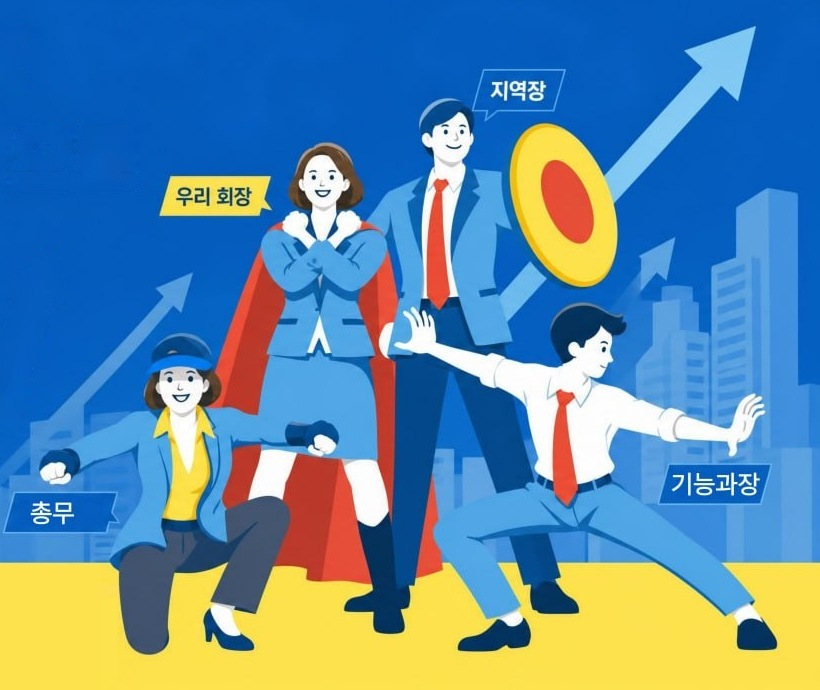

2026 도마지파 사명자 리더십 과정WORKBOOK · VOL.1
1회차 · 명문 사명자 교육
명문 리더십
교육
성과와 성장으로, 다시 함께 레벨업!
질문하고 · 경청하고 · 구조를 설계하는 리더의 교과서

이 책을 가진 당신은, 이미 명문 리더입니다.
개념 이해 · 도구 알기 · 실습 · 현장 활용 · 교관의 목소리
교관 이선미
도마지파 전주교회 교육부
명문 리더십 교육 · 1회차 워크북여는 글
TO. 명문 리더에게
이 책을 받은 당신에게
“교육은 참 좋았는데, 현장에서 무엇을 어떻게 해야 할지 모르겠어요.”
1회차 교육이 끝나고 가장 많이 들은 말입니다. 그래서 이 워크북을 만들었습니다. 이 책은 그날 들은 내용을 다시 읽는 요약집이 아니라, 내일 아침 구역장에게 건넬 첫 질문, 다음 구역장 회의에서 꺼낼 도구, 그리고 1년 뒤 우리 교회의 모습까지 적어 내려가는 리더의 교과서입니다.
우리는 정말 열심히 달려왔습니다. 그런데 설문 속 구역장님들의 마음은 “숨이 막힌다”, “제 얘기를 들어줄 사람이 없는 것 같다”고 말합니다. 성과를 만드는 앞바퀴는 힘차게 도는데, 사람을 키우는 뒷바퀴가 너무 작았던 것입니다.
이 책은 그 뒷바퀴를 키우는 법을 알려 줍니다. 특별한 재능이 필요하지 않습니다. 질문 하나를 바꾸고, 한 사람의 말을 끝까지 듣고, 모두가 의견을 낼 수 있는 구조를 하나 만드는 것 — 그것이 명문 리더의 시작입니다.
명문 리더는 타고나지 않습니다. 훈련됩니다.
이 워크북의 빈칸을 끝까지 채운 사람이라면, 누구든 명문 리더가 될 수 있습니다. 당신이 바뀌면 구역장이 바뀌고, 구역장이 바뀌면 성도님이 머물고 싶은 교회가 됩니다.
“또 네가 많은 증인 앞에서 내게 들은 바를 충성된 사람들에게 부탁하라 저희가 또 다른 사람들을 가르칠 수 있으리라”
디모데후서 2:2 — 배운 사람이 또 다른 사람을 세웁니다. 이 책은 ‘나’에서 멈추지 않고 ‘구역장’에게 흘러가도록 만들어졌습니다.
교육 정보
| 과정 | 2026 명문 리더십 교육 (월 1회 · 셋째 주 · 9월~12월 / 2027년 1분기 부서장·총무 과정 예정) |
|---|
| 1회차 | 성과와 성장으로 다시 함께 레벨업 — 조직문화 진단 · 리더십 자가진단 · 질문 · 경청과 소통 · 구조 설계(피쉬본 · PMI · 5Whys) |
|---|
| 2회차 | 10월 17일 — 효율적인 회의 운영 (“지시만 전달받고 끝나는 회의”에서 “모두가 의견을 내는 회의”로) |
|---|
| 교관 | 이선미 교관 (교육부) |
|---|
2
명문 리더십 교육 · 1회차 워크북교육 목표 · 이 책의 사용법
GOAL
아는 리더에서, 세우는 리더로
이 과정의 목표는 ‘리더십 기술을 아는 것’에서 멈추지 않습니다. “내가 이런 리더가 되어야겠다”는 결심, 그리고 “내가 이런 교회·지역·조직을 만들어야겠다”는 사명으로 이어지는 것이 목표입니다.
STEP 1 · 앎 KNOW
개념을 이해한다
조직문화를 진단하고, 질문·경청·구조 설계가 왜 필요한지 내 말로 설명할 수 있다.
STEP 2 · 됨 BE
그런 리더가 된다
나의 리더십 유형과 강점·개선점을 알고, “나는 이런 리더가 되겠다”를 선언한다.
STEP 3 · 세움 BUILD
교회와 사람을 세운다
성도를 위해, 아래 사명자를 위해, 교회를 위해 — 내가 만들 지역과 조직을 설계하고 구역장에게 전한다.
1회차 학습 목표
- 우리 조직문화의 현주소(성과 70 : 성장 30)를 진단하고, 성과와 성장 두 바퀴의 의미를 설명할 수 있다.
- 나의 리더십 유형(지시전달형 · 결과중심형 · 소통성장형)과 강점 · 개선점을 말할 수 있다.
- 닫힌 질문을 열린 · 명확화 · 확장 질문으로 바꾸어 구역장과 대화할 수 있다.
- 경청 · 재진술 · 원온원(1on1)으로 심리적 안전감을 만드는 방법을 실천할 수 있다.
- 피쉬본 · PMI · 5Whys · 갤러리 워크로 모두가 의견을 내는 구조를 설계할 수 있다.
- “내가 세울 교회 · 지역 · 조직”의 비전을 쓰고, 구역장과 함께 30일 실천을 시작한다.
이 책은 이렇게 읽습니다
개
리더십 개념 이해하기
왜 필요한지, 핵심 원리를 읽습니다
현
현장에서 활용하기
구역장에게 바로 적용하는 가이드
교관의 목소리
녹음 파일의 해당 구간을 함께 들어 보세요
비
나는 이런 리더가 된다
결심과 비전을 기록합니다
🎧 녹음 듣는 법 — 각 코너의 ‘교관의 목소리’ 상자에 적힌 시간(예: 45:28~49:46)은 1회차 강의 녹음 파일의 재생 위치입니다. 혼자 복습할 때, 그리고 구역장과 함께 나눌 때 그 구간을 같이 들어 보세요.
3
명문 리더십 교육 · 1회차 워크북차례
CONTENTS
차례
PROLOGUE명문가에서 명문지파로전주의 명문가들이 가진 공통점, 그리고 우리가 될 이름5
PART 1우리의 현주소 — 조직문화 진단구역장·지역장의 목소리 / 성과 70 : 성장 30 / 두 바퀴 오토바이6
PART 2나는 어떤 리더인가 — 리더십 자가진단지시전달형 · 결과중심형 · 소통성장형 / 나의 강점과 개선점9
PART 3명문 리더의 덕목우리가 뽑은 덕목 / 2026 리더십 5덕목 / 리더의 새로운 정의11
PART 4레벨업 ① 성장 질문열린 질문 · 명확화 질문 · 확장 질문 / 부산과 전주 이야기13
PART 5레벨업 ② 경청과 소통심리적 안전감 / 깨진 그릇 / 재진술 / 원온원(1on1)17
PART 6레벨업 ③ 구조를 설계하는 리더피쉬본 · PMI · 5Whys · 갤러리 카페 · 갤러리 워크21
PART 7현장에서 활용하기 — 구역장에게 흘려보내기4주 전달 플랜 / 20분 모임 진행표 / 상황별 처방전 / 30일 실천표27
PART 8내가 세울 교회 — 명문 리더 선언비전 캔버스 / 리더 선언문 / 2회차(10.17) 준비30

이 책의 한 문장
리더가 조직문화를 정확히 진단하고 개선해 간다면, 함께 성장하고 목표 성과를 낼 수 있습니다.
수(성과) + 질(성장) 개선!
4
PROLOGUE
명문가에서 명문지파로
교관은 강의를 “전라북도에는 예로부터 어떤 명문가가 있었을까?”라는 질문으로 열었습니다.
왕의 가문책임과 권위
왕을 가장 많이 배출한 가문. 권력보다 먼저 책임과 명예를 보여 준 리더십.
학문의 가문배움과 예(禮)
학문과 예의를 중시하고, 과거 급제자를 많이 낸 가문. 공부를 참 잘한 집안.
절개의 가문원칙과 믿음
“목에 칼이 들어와도” 원칙과 믿음을 지킨 가문. 옳지 않은 일 앞에서 굽히지 않은 리더십.
명문가의 공통점 = 배움 + 믿음 + 책임
명문가들은 공부를 참 잘했고, 어떤 상황에서도 믿음과 원칙을 지켰습니다. 우리는 어떻습니까? 말씀의 깨달음을 배우는 데 힘쓰고, 믿음은 들음에서 나기에 듣고 또 배우며, 목에 칼이 들어와도 지키는 믿음을 가진 사람들입니다. 그래서 우리에게 “명문지파가 되라”는 말씀이 주어진 것은 아닐까요?
교관의 목소리 · 녹음 08:16 ~ 10:57
“우리 선조들의 명문가를 살펴보니 공통점이 있습니다. 공부를 참 잘한다. 그리고 목에 칼이 들어와도 믿음을 지킨다. 그래서 우리에게 명문지파가 되라고 말씀하신 것 아닐까요?”
▶ 들으며 생각해 보기: 우리 지파가 ‘명문’이라고 불리려면, 나는 무엇을 남겨야 할까?
100년 뒤, 우리 교회를 ‘명문’이라 부른다면 그 이유는?
그 이유를 만들기 위해 ‘내 세대’에 할 일은?
명문은 이름이 아니라, 한 사람 한 사람을 세운 흔적입니다.
5
PART 1 · 조직문화 진단
우리의 현주소
리더가 조직문화를 정확히 진단해야, 함께 성장하며 목표 성과를 낼 수 있습니다.
개
구역장의 목소리 (2026년 7월 설문)CONCEPT
심리적 긴장 · 숨막힘
평가로 인한 불안감
무리한 업무 강요
심리적 위축
명령 · 지시
상부 명령의 일방적 통보
감정적인 일 처리
벌금 · 벌칙 제도
형식적 시스템
보여주기식 업무 처리
기계적 · 형식적 보고
체계성 부족
소통 부재
일방적 전달, 대화 부족
오해로 언성이 높아짐
답답함과 무기력
에너지는 어디에 쓰이고 있나?
수치를 올리고 1등을 하기 위해 70%의 에너지를 씁니다. 그 사이 구역장의 배터리는 “거의 꺼질 것 같은” 상태입니다.
“제 얘기를 들어줄 사람이 없는 것 같아요. 이렇게 일하는 게 맞는지 모르겠어요.”
교관의 목소리 · 녹음 10:57 ~ 15:05
“기쁜 마음으로 하나님의 일을 하는 것이 아니라, 긴장감과 불안함과 위축… 저도 직장 다닐 때는 당당하다가, 주일에 그 옷만 입으면 죄인이 돼요. 어깨가 굳고 ‘죄송합니다’부터 나와요.”
▶ 들으며 생각해 보기: 나와 함께 일하는 구역장은 나를 만날 때 어떤 표정일까?
진단의 결론 — 성과로만 실력을 평가하고, 명령·지시로 성과 중심 문화가 굳어지면 수동적인 사명자가 길러집니다. 해내고자 하는 열정은 강하지만, 성과가 나오지 않을 때 무기력과 피로감이 커지고, 마음을 나누거나 업무 방향을 물어볼 곳이 없습니다. 소통과 성장을 중심으로 한 조직문화 개선이 시급합니다.
6
PART 1 · 우리의 현주소지역장의 목소리 · 두 바퀴
개
지역장의 목소리 (2026년 7월 설문)CONCEPT
지역장님들에게 “행정을 줄이면, 남은 에너지를 어디에 쓰고 싶으신가요?”라고 물었습니다.
말씀공부 22%, 교육·자기계발 11%, 직접 전도 7%. 지역장도 구역장도 마음은 같았습니다. 사람을 만나 들어 주고, 함께 고민하는 시간을 원하고 있습니다.
보다 체계적이고 효율적인 업무 시스템, 그리고 소통과 성장의 시간이 필요함을 우리 스스로 인지하고 있습니다.
성과와 성장, 두 바퀴로 달리는 오토바이
BEFORE · 앞바퀴(성과)는 크고, 뒷바퀴는 없다
AFTER · 성과를 만드는 힘 + 타인의 성장을 이끄는 힘
엑셀을 꽉 쥐고 달리는데 이상하게 나가지 않습니다. 일하는 사람만 죽도록 일합니다. 들여다보니 뒷바퀴가 없었습니다. 성과를 만드는 앞바퀴만큼, 서로를 이끌어 주는 성장의 뒷바퀴가 필요합니다.
앞바퀴 · 수(數)성과를 만드는 힘
목표, 숫자, 실행, 결과
뒷바퀴 · 질(質)타인의 성장을 이끄는 힘
질문, 경청, 코칭, 함께 만드는 구조
교관의 목소리 · 녹음 15:09 ~ 17:59
“수치 성과를 만드는 힘, 그리고 서로를 이끌어 주는 힘. 성과와 성장, 이 두 바퀴를 굴리는 일이 여기 앉아 계신 가장 핵심의 리더들에게 달려 있습니다.”
7
PART 1 · 우리의 현주소실습 · 현장에서 활용하기
실
실습 · 우리 지역의 두 바퀴 점검PRACTICE
지난 한 달을 떠올리며 1(전혀 아니다) ~ 5(매우 그렇다)에 ○ 하세요.
| 바퀴 | 점검 문항 | 1 · 2 · 3 · 4 · 5 |
|---|
앞
성과 | 우리 지역(구역)의 이번 달 목표를 모두가 같은 말로 설명할 수 있다. | ① ② ③ ④ ⑤ |
| 목표를 위해 누가, 무엇을, 언제까지 하는지 분명하다. | ① ② ③ ④ ⑤ |
| 보고서와 행정이 ‘실제 일’에 도움이 되는 형태다. | ① ② ③ ④ ⑤ |
| 성과가 난 이유(잘된 점)를 함께 나누고 다시 쓴다. | ① ② ③ ④ ⑤ |
뒤
성장 | 구역장이 실수를 말해도 비난받지 않는다고 느낀다. | ① ② ③ ④ ⑤ |
| 나는 구역장과 업무가 아닌 ‘마음’에 대해 대화한 적이 있다. | ① ② ③ ④ ⑤ |
| 회의에서 모든 사람이 한 번 이상 의견을 말한다. | ① ② ③ ④ ⑤ |
| 구역장이 지난달보다 성장한 점을 구체적으로 말할 수 있다. | ① ② ③ ④ ⑤ |
우리 지역의 오토바이를 그려 보세요 — 두 바퀴의 크기는 지금 어떤가요?
점수에 맞게 앞바퀴와 뒷바퀴를 동그라미로 그리고, 뒷바퀴를 키우기 위해 필요한 것 한 가지를 적어 보세요.
구역장 모임에서 이렇게 시작하세요 (10분)
- 이 페이지의 8문항을 구역장들에게 무기명으로 체크하게 합니다. (리더의 점수와 비교해 보세요.)
- “우리 오토바이는 어떤 모양일까요?”라고 열린 질문으로 묻고, 한 사람도 빠짐없이 한 마디씩 듣습니다.
- “뒷바퀴를 키우려면 제가 무엇을 바꾸면 좋을까요?” — 리더가 먼저 묻는 것이 심리적 안전감의 시작입니다.
8
PART 2 · 리더십 자가진단
나는 어떤 리더일까?
좋은 유형, 나쁜 유형은 없습니다. 내 강점을 알고, 부족한 부분은 동료와 함께 채워 가는 것입니다.
01지시전달형
강점 명확한 방향 제시, 빠른 실행
주의 구성원의 자발성이 낮아짐
“이번 주까지 이렇게 해 주세요.”
02결과중심형
강점 수치·성과로 동기부여, 추진력
주의 성장과 협력이 약해짐
“그래서 몇 명 나왔어요? 했어요?”
03소통성장형
강점 경청, 권한 부여, 자발성 강화
주의 방향과 마감이 흐려지지 않게
“어떤 어려움이 있으세요? 함께 볼까요?”
교관의 목소리 · 녹음 29:59 ~ 31:20
“뭐가 좋고 뭐가 나쁘다는 없어요. 조직이 발전하려면 지시 전달도, 결과를 내는 것도, 소통 성장도 다 중요합니다. 그리고 개선점은 나 혼자 가지고 가는 게 아니라, ‘네가 나를 좀 도와주겠니?’ 하시면 됩니다.”
상황에 따라 유형을 ‘골라 쓰는’ 리더
| 상황 | 잘 맞는 리더십 | 이렇게 말해 보세요 |
|---|
| 긴급 공지 · 안전 · 마감 임박 | 지시전달 | “이유는 ○○입니다. 오늘 8시까지 이것 한 가지만 부탁드려요.” |
| 목표 점검 · 월말 정리 | 결과중심 | “목표 대비 어디까지 왔는지 같이 보고, 남은 일을 정해 볼까요?” |
| 지친 구역장 · 새 사명자 · 반복되는 문제 | 소통성장 | “요즘 사명하시면서 어떤 부분이 가장 힘드세요?” |
💡 핵심 — 지금 우리 조직은 지시와 결과의 힘(앞바퀴)은 충분합니다. 이번 과정은 모든 리더가 소통성장형 근육(뒷바퀴)을 하나씩 더 갖추는 데 집중합니다.
9
PART 2 · 나는 어떤 리더일까?실습 · 자가진단
교육 당일 QR 진단을 다시 해 볼 수 없는 분을 위한 워크북용 간이 체크리스트입니다. 평소 나의 모습에 가까운 정도로 1~5점을 적으세요.
| A · 지시전달형 |
|---|
| 회의에서 위에서 내려온 방침을 정확히 전달하는 데 가장 집중한다. | __점 |
| 구역장에게 “~해 주세요”라고 요청하는 말이 “~어떠세요?”보다 많다. | __점 |
| 의견을 모으기보다 빠르게 결정하고 진행하는 편이다. | __점 |
| 일이 정해진 순서와 방식대로 진행되는지 확인하는 것이 중요하다. | __점 |
| 방향이 분명하지 않은 상태로 일을 맡기면 불안하다. | __점 |
| B · 결과중심형 |
|---|
| 출석 · 섭외 · 전도 숫자를 보면 상황이 가장 빨리 파악된다. | __점 |
| 구역장에게 주로 “했나요? 몇 명이에요?”라고 묻는다. | __점 |
| 목표에 못 미치면 독려 연락을 자주 하게 된다. | __점 |
| 성과를 낸 사람을 먼저 칭찬하고 사례로 소개한다. | __점 |
| 과정의 어려움보다 결과가 나왔는지가 더 궁금하다. | __점 |
| C · 소통성장형 |
|---|
| 업무 이야기 전에 안부와 마음을 먼저 묻는다. | __점 |
| 구역장이 말할 때 끝까지 듣고, 내가 이해한 것이 맞는지 확인한다. | __점 |
| 누군가 실수했을 때 책임을 묻기보다 함께 원인을 찾는다. | __점 |
| 구역장마다 강점을 알고, 그에 맞는 일을 맡긴다. | __점 |
| 정기적으로 구역장과 1:1로 대화하는 시간이 있다. | __점 |
🤝 함께 성장하기 — ③을 도와줄 동료 이름: 부탁할 말: “○○님, 제가 이 부분을 고쳐 가려는데 저를 좀 도와주시겠어요?”
10
PART 3 · 명문 리더의 덕목
명문 리더에게 필요한 덕목은?
그 덕목은 어떻게 하면 갖출 수 있을까요? 각자 3가지를 적고, 토론으로 대표 덕목 3가지를 골랐습니다.
실
1회차 토론에서 우리가 뽑은 덕목PRACTICE
책임감
배려심
인성
말씀의 깨달음
협력
이해와 포용
어머니의 마음 · 희생
서로 존중
※ 녹음(40:23~42:49)에서 조별 발표 내용을 정리했습니다. 우리 조의 덕목을 아래에 다시 적어 보세요.
🟦 내가 생각한 덕목 3가지 (파란 포스트잇)
🟥 우리 조 대표 덕목 3가지 (빨간 포스트잇)
덕목은 ‘결심’이 아니라 ‘습관’으로 갖춥니다
| 내가 고른 덕목 | 그 덕목이 보이는 ‘행동’ 1가지 | 언제 · 누구에게 |
|---|
| 예) 배려심 | 구역장 보고를 받기 전에 “오늘 컨디션 어떠세요?” 먼저 묻기 | 매주 월 구역장 3명 |
| | |
| | |
| | |
“너희 중에는 그렇지 아니하니 너희 중에 누구든지 크고자 하는 자는 너희를 섬기는 자가 되고”
마가복음 10:43 — 명문 리더의 모든 덕목은 결국 ‘섬김’으로 드러납니다.
11
PART 3 · 명문 리더의 덕목2026 리더십 5덕목 · 리더의 새로운 정의
| 덕목 | 핵심 | 우리 현장에서는 |
|---|
| ① 연결 | 경청 · 커뮤니케이션 | 구역장의 말을 끝까지 듣고, 이해하고, 공감한다. |
| ② 신뢰 | 일관성 · 심리적 안전 | 실수해도, 정책을 이해 못해도 혼내지 않고 “같이 해 볼까요?” |
| ③ 성장 | 질문 · 코칭 | “했어요?” 대신 “어떤 어려움이 있으세요?” |
| ④ 방향 | 비전 · 우선순위 | 왜 하는지(의미)를 먼저 말하고, 무엇이 가장 중요한지 정해 준다. |
| ⑤ 실행 | 솔선수범 · 책임 | 리더가 먼저 하고, 결과의 책임은 리더가 진다. |
교관의 질문 — ①②③번 키워드는 일에 관한 것일까요, 사람에 관한 것일까요?
👉 사람입니다. 일은 사람이 하기 때문입니다. 사람과 소통하고, 사람을 코칭하고, 사람을 돌보면 — 일은 자연스럽게 잘됩니다.
교관의 목소리 · 녹음 42:49 ~ 45:25
“사람과 소통하고, 사람을 코칭하고, 사람을 돌보면 — 당연히 일은 어떻게 될까요? 자연스럽게 잘됩니다.”
2026 조직운영 리더의 새로운 정의
BEFORE
성과 지시자
무엇을 하라고 말하는 사람
→
AFTER
방향 설계자 & 질문자
왜·어디로를 보여 주고, 묻고, 구조를 만드는 사람
12